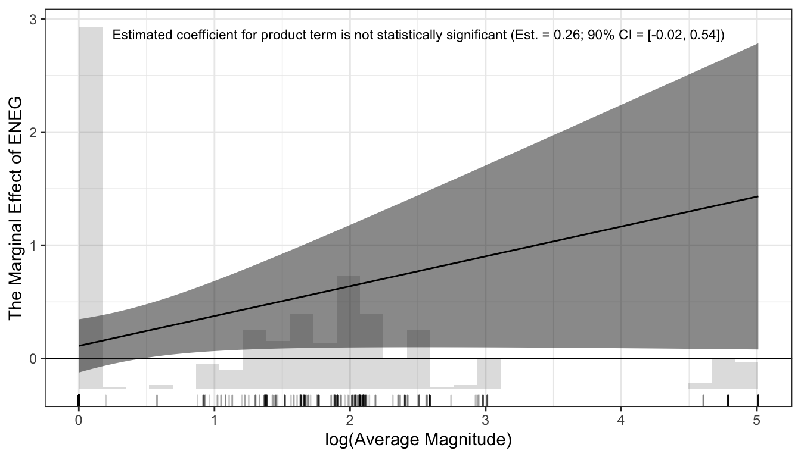

6.3 Berry, Golder, and Milton (2012)
Berry, Golder, and Milton (2012, BGM) update BCG’s suggestions by providing a specific collection of hypotheses that they suggest researchers posit and test.
They suggest that for each interactive hypothesis, there are actually five quantities of interest that the research hypothesize.
- \(\frac{\partial E(y \mid X_{z_s = \text{lo}})}{\partial x_s}\): the effect of \(x_s\) when \(z_s\) takes on a low value.
- \(\frac{\partial E(y \mid X_{z_s=\text{hi}})}{\partial x_s}\): the effect of \(x_s\) when \(z_s\) takes on a high value.
- \(\frac{\partial E(y \mid X_{x_s=\text{lo}})}{\partial z_s}\): the effect of \(z_s\) when \(x_s\) takes on a low value.
- \(\frac{\partial E(y \mid X_{x=\text{hi}})}{\partial z_s}\): the effect of \(z_s\) when \(x_s\) takes on a high value.
- \(\frac{\partial E(y \mid X_{s})}{\partial x_s\partial z_s}\): the “interaction effect;” the effect of \(z_s\) on the effect of \(x_s\) on \((y \mid X_{s})\). This quantity is symmetric, so it’s equivalent to the effect of \(x_s\) on the effect of \(z_s\) on \((y \mid X_{s})\).
In order to fully evaluate all five possible hypotheses, they suggest two marginal effect plots and reporting the statistical significance of the product term.
# load data
cg <- read_csv("data/parties.csv") %>%
filter(established_democracy == 1) # keep only established democracies
# fit model; reproduces coefficients reported in Table 2, p. 698, 1946-2000 Established Democracys of Clark and Golder (2006)
fit <- lm(enep ~ eneg*log(average_magnitude) + eneg*upper_tier + en_pres*proximity, data = cg)
# extract coefficient estimates
beta_hat <- coef(fit)
# calculate cluster-robust standard errors Stata-style (rather than the vanilla vcov())
M <- length(unique(cg$country))
N <- length(cg$country)
K <- fit$rank
dfc <- (M/(M - 1)) * ((N - 1)/(N - K))
uj <- apply(sandwich::estfun(fit), 2, function(x) tapply(x, cg$country, sum));
uj <- na.omit(uj)
sigma_hat <- dfc * sandwich::sandwich(fit, meat = crossprod(uj)/N)
# compute marginal effects and ses
z <- seq(min(log(cg$average_magnitude)), max(log(cg$average_magnitude)), length.out = 100)
me <- beta_hat["eneg"] + beta_hat["eneg:log(average_magnitude)"]*z
se <- sqrt(sigma_hat["eneg", "eneg"] +
(z^2)*sigma_hat["eneg:log(average_magnitude)", "eneg:log(average_magnitude)"] +
2*z*sigma_hat["eneg", "eneg:log(average_magnitude)"])
gg_data <- tibble(log_average_magnitude = z,
marginal_effect = me,
se = se)
# plot the marginal effects
gg0 <- ggplot(gg_data, aes(x = log_average_magnitude,
y = marginal_effect,
ymin = marginal_effect - 1.64*se,
ymax = marginal_effect + 1.64*se)) +
geom_hline(yintercept = 0) +
geom_ribbon(fill = "grey10", alpha = 0.5) +
geom_line() +
geom_rug(data = cg, aes(x = log(average_magnitude),
y = NULL, ymin=NULL, ymax = NULL),
sides = "b", alpha = 0.2) +
labs(x = "log(Average Magnitude)",
y = "The Marginal Effect of ENEG") +
theme_bw()
# now add the histogram; which is harder than I expected
# I used three steps
# 1. compute the bins and counts manually
# 2. grab the axis limits of the me plot
# 3. add the rectangles (rescaled appropriately) *underneath* the layers of the me plot
## first, compute the counts for each bin, manually
x <- log(cg$average_magnitude) # variable to histogram (makes code below easier to read)
n_breaks <- 30 # number of breaks
breaks <- seq(from = min(x),
to = max(x),
length.out = n_breaks)
### a loop to compute the information for each bin (loop for correctness)
n_bins <- n_breaks - 1
lwr <- upr <- count <- numeric(n_bins)
for (i in 1:n_bins) {
lwr[i] <- breaks[i]
upr[i] <- breaks[i + 1]
count[i] <- ifelse(i == 1,
sum(x <= upr[i] & x >= lwr[i]), # 1st bin is closed on both sides
sum(x <= upr[i] & x > lwr[i])) # subsequent bins are open on the left
}
gg_hist <- tibble(lwr, upr, count) %>%
mutate(rescaled_count = count/max(count)) # rescale counts so that largest is one
## second, get the limits of the marginal effects plot
get_plot_limits <- function(plot) {
gb = ggplot_build(plot)
xmin = gb$layout$panel_params[[1]]$x.range[1]
xmax = gb$layout$panel_params[[1]]$x.range[2]
ymin = gb$layout$panel_params[[1]]$y.range[1]
ymax = gb$layout$panel_params[[1]]$y.range[2]
list(xmin = xmin, xmax = xmax, ymin = ymin, ymax = ymax)
}
lim0 <- get_plot_limits(gg0)
## third, nsert rectangles underneath current layers, rescaling bars to fit vertical axis
### a function to add a layer underneath
### ref: https://stackoverflow.com/questions/20249653/insert-layer-underneath-existing-layers-in-ggplot2-object
`-.gg` <- function(plot, layer) {
if (missing(layer)) {
stop("Cannot use `-.gg()` with a single argument. Did you accidentally put - on a new line?")
}
if (!is.ggplot(plot)) {
stop('Need a plot on the left side')
}
plot$layers = c(layer, plot$layers)
plot
}
### create an interaction term report to add to the top of the figure
est <- beta_hat["eneg:log(average_magnitude)"]
se <- sqrt(sigma_hat["eneg:log(average_magnitude)", "eneg:log(average_magnitude)"])
ci_upr <- est + 1.64*se
ci_lwr <- est - 1.64*se
interaction_report <- paste0("Estimated coefficient for product term is not statistically significant (Est. = ",
round(est, 2), "; 90% CI = [", round(ci_lwr, 2), ", ", round(ci_upr, 2), "])")
### add histogram and interaction report
gg0 - # minus adds layer "underneath" the others
geom_rect(data = gg_hist, aes(xmin = lwr,
xmax = upr,
ymin = 0 + lim0$ymin,
ymax = 1.0*rescaled_count*(lim0$ymax - lim0$ymin) + lim0$ymin,
x = NULL, y = NULL),
alpha = 0.2) +
# now add product term notes
annotate("text",
x = (lim0$xmin + lim0$xmax)/2,
y = 0.98*(lim0$ymax - lim0$ymin) + lim0$ymin,
label = interaction_report,
size = 3)
Now we reverse the role of magnitude and ENEG in the marginal effect plot and do the whole think again.
# compute marginal effects and ses
z <- seq(min(cg$eneg), max(cg$eneg), length.out = 100)
me <- beta_hat["log(average_magnitude)"] + beta_hat["eneg:log(average_magnitude)"]*z
se <- sqrt(sigma_hat["log(average_magnitude)", "log(average_magnitude)"] +
(z^2)*sigma_hat["eneg:log(average_magnitude)", "eneg:log(average_magnitude)"] +
2*z*sigma_hat["log(average_magnitude)", "eneg:log(average_magnitude)"])
gg_data <- tibble(eneg = z,
marginal_effect = me,
se = se)
gg0 <- ggplot(gg_data, aes(x = eneg,
y = marginal_effect,
ymin = marginal_effect - 1.64*se,
ymax = marginal_effect + 1.64*se)) +
geom_hline(yintercept = 0) +
geom_ribbon(fill = "grey10", alpha = 0.5) +
geom_line() +
geom_rug(data = cg, aes(x = eneg,
y = NULL, ymin=NULL, ymax = NULL),
sides = "b", alpha = 0.2) +
labs(x = "ENEG",
y = "The Marginal Effect of log(Average Magnitude)",
caption = "Reproduction of Figure 1 on p. 701 of Clark and Golder (2006)") +
theme_bw()
# now add the histogram; which is harder than I expected
# I used three steps
# 1. compute the bins and counts manually
# 2. grab the axis limits of the me plot
# 3. add the rectangles (rescaled appropriately) *underneath* the layers of the me plot
## first, compute the counts for each bin, manually
x <- cg$eneg # variable to histogram (makes code below easier to read)
n_breaks <- 30 # number of breaks
breaks <- seq(from = min(x),
to = max(x),
length.out = n_breaks)
### a loop to compute the information for each bin (loop for correctness)
n_bins <- n_breaks - 1
lwr <- upr <- count <- numeric(n_bins)
for (i in 1:n_bins) {
lwr[i] <- breaks[i]
upr[i] <- breaks[i + 1]
count[i] <- ifelse(i == 1,
sum(x <= upr[i] & x >= lwr[i]), # 1st bin is closed on both sides
sum(x <= upr[i] & x > lwr[i])) # subsequent bins are open on the left
}
gg_hist <- tibble(lwr, upr, count) %>%
mutate(rescaled_count = count/max(count)) # rescale counts so that largest is one
## second, get the limits of the marginal effects plot
get_plot_limits <- function(plot) {
gb = ggplot_build(plot)
xmin = gb$layout$panel_params[[1]]$x.range[1]
xmax = gb$layout$panel_params[[1]]$x.range[2]
ymin = gb$layout$panel_params[[1]]$y.range[1]
ymax = gb$layout$panel_params[[1]]$y.range[2]
list(xmin = xmin, xmax = xmax, ymin = ymin, ymax = ymax)
}
lim0 <- get_plot_limits(gg0)
## third, nsert rectangles underneath current layers, rescaling bars to fit vertical axis
## ref: https://stackoverflow.com/questions/20249653/insert-layer-underneath-existing-layers-in-ggplot2-object
`-.gg` <- function(plot, layer) {
if (missing(layer)) {
stop("Cannot use `-.gg()` with a single argument. Did you accidentally put - on a new line?")
}
if (!is.ggplot(plot)) {
stop('Need a plot on the left side')
}
plot$layers = c(layer, plot$layers)
plot
}
gg0 - # minus adds layer "underneath" the others
geom_rect(data = gg_hist, aes(xmin = lwr,
xmax = upr,
ymin = 0 + lim0$ymin,
ymax = 1.0*rescaled_count*(lim0$ymax - lim0$ymin) + lim0$ymin,
x = NULL, y = NULL),
alpha = 0.2) +
# now add product term notes
annotate("text",
x = (lim0$xmin + lim0$xmax)/2,
y = 0.98*(lim0$ymax - lim0$ymin) + lim0$ymin,
label = interaction_report,
size = 3)